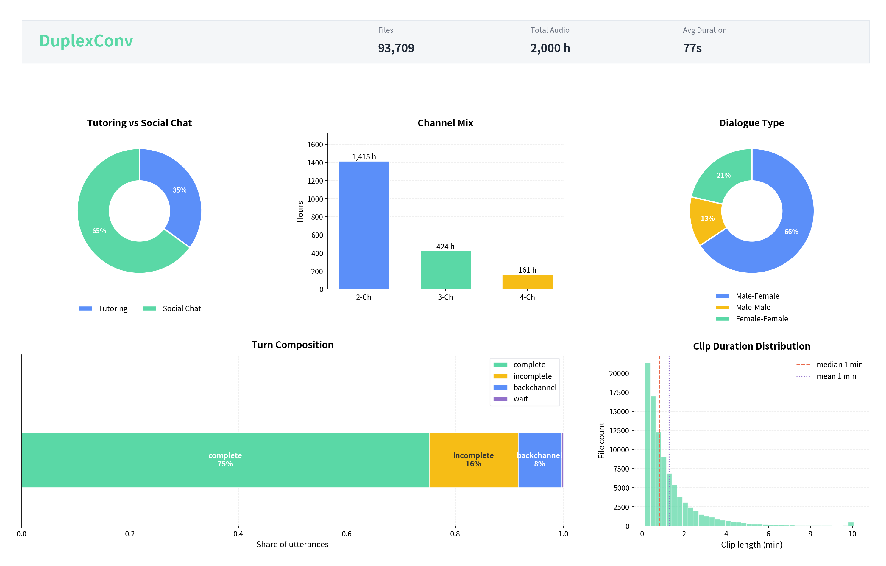

Abstract 摘要
Open-source Chinese speech corpora have primarily focused on single-speaker, read speech, or scripted interactions, while large-scale datasets capturing natural full-duplex conversational dynamics remain limited. In particular, publicly available resources rarely provide multi-channel recordings of spontaneous multi-party conversations with overlapping speech, backchannels, interruptions, pauses, and other interaction phenomena that are fundamental to human communication.
To address this gap, we present SmoothConv and DuplexConv, a pair of complementary Chinese conversational speech datasets comprising a total of 2,100 hours of naturally occurring multi-party interactions collected from Tutoring and Social Chat scenarios. The datasets are designed to facilitate research on full-duplex spoken dialogue, turn-taking modeling, and interruption handling.
SmoothConv contains 100 hours of carefully curated conversations with expert human annotations, including high-quality transcripts, millisecond-level timestamps, turn boundaries, overlap regions, pause information, speaker attributes, and interaction-related labels. It serves as a benchmark resource for fine-grained conversational analysis and supervised model training.
DuplexConv scales the corpus to 2,000 hours through an LLM-assisted annotation pipeline, providing large-scale transcripts, turn structures, speaker information, and scene-level contextual labels.
Together, SmoothConv and DuplexConv establish a unified resource for studying conversational behaviors in realistic full-duplex settings, supporting research that spans fine-grained interaction modeling and robust speech understanding.
开源中文语音语料库先前主要面向单人朗读或脚本化交互，而能够刻画自然全双工会话动态的大规模数据集仍然有限。尤其是，公开资源中鲜有提供多通道、真实自发式多方对话录音，涵盖重叠语音、附和、打断、停顿等对人类交流至关重要的交互现象。
为填补这一空白，我们发布 SmoothConv 与 DuplexConv 两个互补的中文会话语音数据集，合计 2,100 小时自然发生的多方交互，采集自教育与闲聊场景。数据集旨在支持全双工口语对话、话轮建模与打断处理等方面的研究。
SmoothConv 包含 100 小时精心筛选的对话及人工精标，提供高质量转写、毫秒级时间戳、话轮边界、重叠区段、停顿信息、说话人属性及交互相关标签，可作为细粒度会话分析与监督模型训练的基准资源。
DuplexConv 通过大模型辅助标注流水线将语料扩展至 2,000 小时，提供大规模转写、话轮结构、说话人信息与场景级语境标签。
SmoothConv 与 DuplexConv 共同构成统一资源，用于在真实全双工场景下研究会话行为，支持从细粒度交互建模到稳健语音理解的研究。
Annotation Samples 标注样例
Annotation visualizations for SmoothConv and DuplexConv in Tutoring and Social Chat. SmoothConv 与 DuplexConv 在教育与闲聊场景下的标注可视化样例。
For preview, each video is a 45-second clip excerpted from the full conversation. 为便于展示，以下视频均为从完整对话中截取的 45 秒片段。
Data Distribution 数据分布
Overview of the open-source SmoothConv and DuplexConv data composition. SmoothConv 与 DuplexConv 开源版本的数据构成概览。

